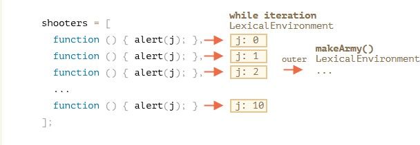

function makeArmy () {
let shooters = [];
let i = 0;
while (i < 2) {
let shooter = function () { alert(i);
};
shooters .push(shooter );
i++;
}
return shooters ;
}
let army = makeArmy (); army[0];
global lexical environment (LE)
creation phase
LE{makeArmy:fn,outer:null}
execution phase
LE{makeArmy:fn, army:[fn,fn],outer:null}
LE for makeArmy ()
creation phase
LE{arguments:{length:0},outer:global}
execution phase
After while-loop, changed the condition to while(i<2)to save time. The LE is being changed as below
LE{arguments:{length:0}, shooters:[fn,fn],outer:global}
LE for LE of the while loop
Each iteration of while loop has own LE, only use i=0 as example here.
creation phase
LE{outer:makeArmy}
execution phase
shooters.push(shooter);
i++;
//The two statements above will cause the changes in makeArmy() functional EC
//while-loop EC:
LE{outer:makeArmy, shooters:[fn,fn]}
//makeArmy() functional EC:
LE{outer:global , arguments:{length:0}, shooters:[fn,fn]}
LE for army[0]
creation phase
/*closure scope
i=2
outer:makeArmy
*/
// army[0] functional Ec:creation
LE{arguments:{length:0},outer:closurescope}
execution phase
/*closure scope
i=2
outer:makeArmy
*/
// army[0] functional Ec:creation
LE{arguments:{length:0},outer:closurescope}
What will army[0] alert?
//the alert will be
2
Can you fix the code?
function makeArmy()
{
let shooters = [];
let i = 0;
while (i < 2) {
let j = i;
let shooter = function() { console.log(j);
};
shooters.push(shooter); i++;
}
return shooters;
}
let army = makeArmy(); army.forEach(f => f());
How will the diagram change?

Question 2: Write a function printNumbers(from, to) that outputs a number every second, starting from from and ending with to.
function printNumbers(from,to)
{
let current = from;
let timerId = setInterval(function(){
console.log(current);
if(current == to){
clearInterval(timerId);
}
current++;
},1000);
}
//usage
printNumbers(5,10);
Question 3: What will setTimeout show?
In the code below there's a setTimeout call scheduled, then a heavy calculation is run, that takes more than
1OOms to finish.
When will the cheduled function run?
- After the loop.
- Before the loop.
- In the beginning of the loop.
What is alert going to show?
let i = 0;
setTimeout ( ( )=> alert ( i) ,100 ) ; //?
//assume that the time to execute this function is >100ms
for (let j= 0; j<100000000; j++){
i++;
}
Solution:
Any setTimeout will run only after the current code has finished.
The i will be the last one: 100000000.
let i = 0;
setTimeout ( ( )=> alert (i) ,100 ) ; // 100000000
//assume that the time to execute this function is >100ms
for (let j= 0; j<100000000; j++){
i++;
}